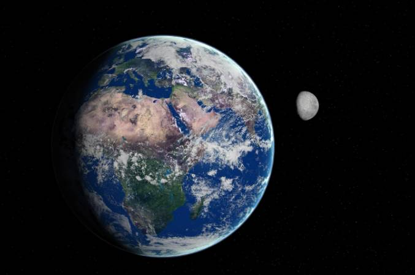

โลก ดวงจันทร์ และปรากฏการณ์บนท้องฟ้า
โลก เป็นดาวเคราะห์ลำดับที่ 3 จากดวงอาทิตย์ และเป็นสถานที่เดียวที่มนุษย์รู้แน่ชัดว่ามีสิ่งมีชีวิต โลกมีบรรยากาศที่ช่วยปกป้องสิ่งมีชีวิตจากรังสีบางส่วนจากอวกาศ และมีน้ำในปริมาณมาก ซึ่งเป็นปัจจัยสำคัญต่อการดำรงชีวิต
ดวงจันทร์
ดวงจันทร์ เป็นบริวารธรรมชาติของโลก มีอิทธิพลต่อปรากฏการณ์น้ำขึ้นน้ำลง เนื่องจากแรงโน้มถ่วงของดวงจันทร์ที่กระทำต่อโลก ดวงจันทร์ไม่มีแสงสว่างในตัวเอง แต่สามารถมองเห็นได้เพราะสะท้อนแสงจากดวงอาทิตย์
การเปลี่ยนแปลงรูปร่างของดวงจันทร์ที่เรามองเห็นในแต่ละคืนเรียกว่า ข้างขึ้นและข้างแรม ซึ่งเกิดจากตำแหน่งที่เปลี่ยนไปของดวงจันทร์เมื่อโคจรรอบโลก
ปรากฏการณ์สำคัญบนท้องฟ้า
สุริยุปราคา – เกิดขึ้นเมื่อดวงจันทร์มาอยู่ระหว่างโลกกับดวงอาทิตย์ ทำให้ดวงจันทร์บังแสงจากดวงอาทิตย์บางส่วนหรือทั้งหมด
จันทรุปราคา – เกิดขึ้นเมื่อโลกอยู่ระหว่างดวงอาทิตย์กับดวงจันทร์ ทำให้เงาของโลกตกลงบนดวงจันทร์
ฝนดาวตก – เกิดจากเศษฝุ่นหรือเศษวัสดุจากวัตถุในอวกาศเข้าสู่ชั้นบรรยากาศโลกและเกิดการเสียดสีจนสว่างเป็นเส้นบนท้องฟ้า